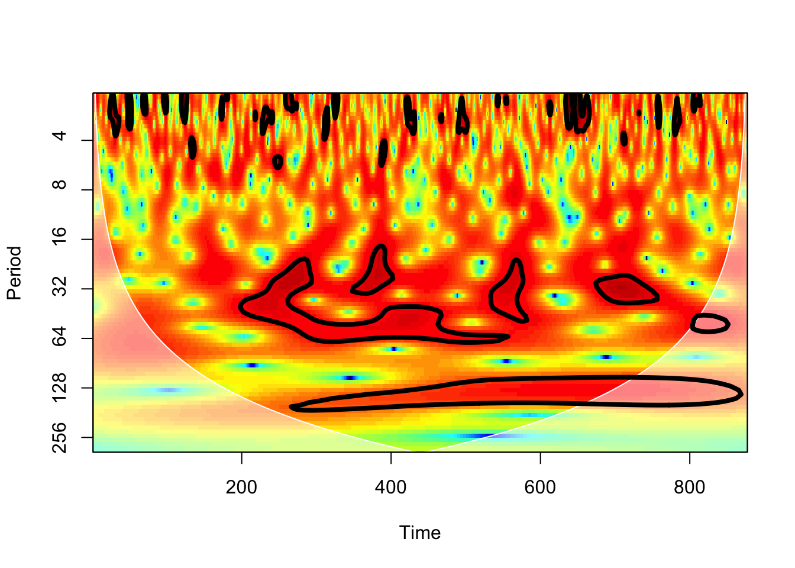

## https://data.giss.nasa.gov/gistemp/temps <-read.table("data/global-temp-anomalies1880-2023.txt", skip=7, header=TRUE)## number of years = 145temp.series <-as.numeric(temps[1,2:13])/100for(i in2:145) temp.series <-c(temp.series, as.numeric(temps[i,2:13])/100)## make into time series objecttemp.series <-as.ts(temp.series, start=1880, end=2023, frequency=12)## 1740 = 145*12 (months in the series)ytk <-seq(1,1740,by=120)yrs <-seq(1880,2023,by=10)plot(temp.series, type="l", axes=FALSE, frame=TRUE, xaxs="i",col="#07419e",xlab="Year",ylab="Global Temperature Anomaly")axis(1,at=ytk,labels=yrs)axis(2)## by definition, mean=0abline(h=0)
## fit loess linetlo <-loess(as.numeric(temp.series) ~seq(1,1740), span=1/6)## add loess line to time-series plotplot(temp.series, type="l", axes=FALSE, frame=TRUE, xaxs="i",col="#07419e",xlab="Year",ylab="Global Temperature Anomaly")lines(predict(tlo, data.frame(seq(1,1740))), col="magenta", lwd=3)#lines(lowess(temp.series, f=0.0758), col="magenta", lwd=3)axis(1,at=ytk,labels=yrs)axis(2)abline(h=0)
## another way to add a local smootherplot(soi.series, type="l", axes=FALSE, frame=TRUE, xaxs="i",col="#a80840",xlab="Year",ylab="Standardized SOI")axis(1,at=ytk1,labels=yrs1)axis(2)abline(h=0)lines(lowess(soi.series, f=0.066), col="black", lwd=3)
Try some wavelets.
## waveletsrequire(biwavelet)## biwavelet requires a two-column matrix as inputX <-cbind(1:877,soi.series)## wavelet transformw1 <-wt(X)# plotplot(w1)

Wavelet spectrum, which combines the frequency and time domains of variability in ENSO. Clear evidence of a 5-year periodicity; some evidence of 3-year, 10-year. Possible decay of 5-year periodicity at later dates. Period in months.
The color indicates the power of the series at a particular period in a particular time. Power is the signal-processing equivalent of variance, so you can think of this as being similar to an analysis of variance. Which frequencies (inverse of period) contribute the most to the total variance in the time series?
Circled regions indicate statistically significant regions of high power (using an AR1 as a null model).